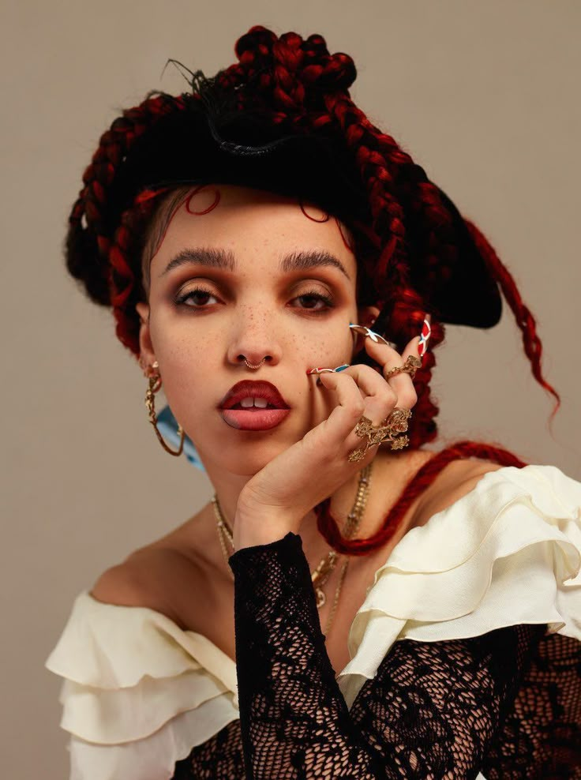

Tahliah Debrett Barnett nació el 17 de enero de 1988 en Cheltenham ,Gloucestershire, hija única de una madre inglesa que era bailarina y gimnasta y un padre jamaicano que era músico. Tiene ascendencia española por parte de la familia de su madre. Fue criada por su madre y su padrastro, a quien describió como un "fanático del jazz de ascendencia barbadense ", y no conoció a su padre biológico hasta que tuvo 18 años. Barnett creció en Cheltenham, una ciudad balneario que describió como "como en medio de la nada". Asistió a St Edward's School , una escuela católica privada mixta. Su educación en la escuela fue financiada por una beca. Desde muy joven, tomó clases de ópera y ballet y participó en varias producciones de la Escuela St Edward's.
A los 16 años, Barnett comenzó a hacer música en clubes juveniles. A los 17 años, se mudó al sur de Londres para seguir una carrera como bailarina, y se matriculó en la BRIT School . A los 18 años, comenzó a trabajar con productores discográficos locales para tratar de encontrar su propio sonido musical. Alrededor de esta época, escribió la canción "I'm Your Doll" y terminó produciendo muchas de las que ella considera "demos realmente malas". Después de cambiar su enfoque de la danza a la música, se transfirió a Croydon College para seguir una educación en bellas artes. Trabajó como bailarina de apoyo en videos musicales de artistas como Kylie Minogue, Plan B, Ed Sheeran , Taio Cruz, Dionne Bromfield, Jessie J y Wretch 32. Fue bailarina de apoyo de Jessie J en su video de 2010 para "Do It like a Dude", y apareció nuevamente en su video de 2011 para " Price Tag ". Durante un tiempo, trabajó como anfitriona en un club de striptease y cantó periódicamente en el Box Soho en Soho , Ciudad de Westminster.